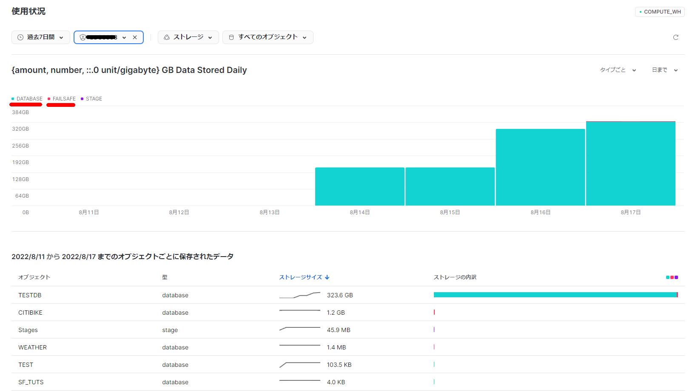

SnowPro Core 認定試験ガイドの6.2向けの勉強メモ
Snowflake 認定資格 | Snowflake 【スノーフレイク】 https://www.snowflake.com/certifications/?lang=ja
6.2 Snowflakeによる継続的なデータ保護の概要を説明する。
- Time Travel
- Fail Safe
- データ暗号化
- クローニング
概要
Time Travel保持期間が終了した直後にFail-safeにデータが移行される。Snowflakeによって履歴データを回復できる可能性のある期間（構成不可能）は7日間となる。“可能性のある期間"というメッセージがマニュアルにある通り、ベストエフォート方式で提供されるデータ回復サービスとなる。

設定方法
-
特になし
-
Time Travelのようにエディションによって条件が分かれているとかではない
-
使用量の確認
select TABLE_CATALOG, TABLE_NAME, ((ACTIVE_BYTES / 1024) / 1024) / 1024 as storage_usage_gb, ((FAILSAFE_BYTES / 1024) / 1024) / 1024 as failsage_usage_gb, ((TIME_TRAVEL_BYTES / 1024) / 1024) / 1024 as timetravel_usage_gb from "INFORMATION_SCHEMA".table_storage_metrics where TABLE_NAME in('T1') ; -
使用量はコンソールからも確認できる

注意事項
- 完了するまでに数時間から数日かかる場合がある
- サポートに連絡して復旧してもらう必要がある
- ベストエフォート方式で提供されるデータ回復サービス
- Fail-safeは、Time Travel保持期間が終了した後に履歴データにアクセスする手段としては提供されていません
- いつのまにかFailsafe用の領域が溜まりがちなのでオペレーションやテーブルの種類に注意が必要だな、と思った。何も考えずにいるとテーブル作成→テストデータ生成→DropでFailsafe用の領域がたくさんになってしまうという未来が見える。